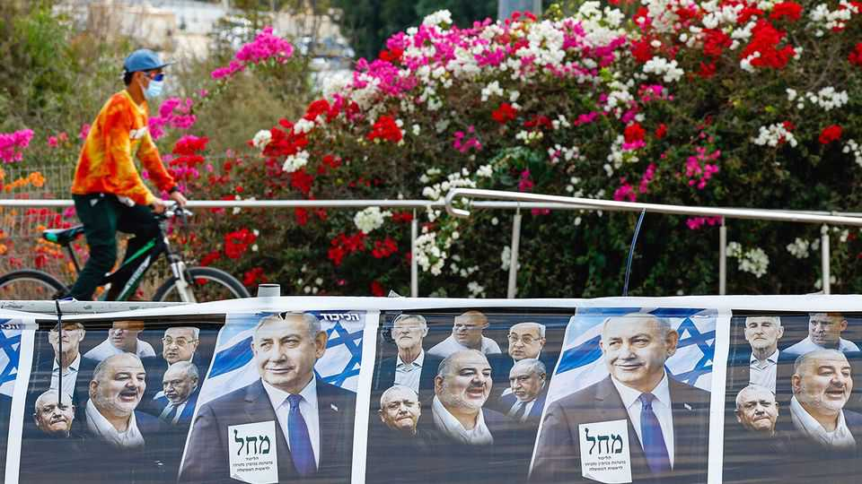

A deeply divided Israel prepares to vote
Old political alliances are fraying but the outcome is still deeply uncertain

Oct 22nd 2026
On the morning of October 7th 2023 Hamas fighters drove through the Israeli town of Sderot, less than a mile from Gaza, shooting at civilians. For Israelis, the small city became a symbol of the extent to which their nation’s defences had failed. In the last election, in 2022, over three-quarters of its voters plumped for parties that joined the coalition government of Binyamin Netanyahu, Israel’s prime minister. But nine days before the country’s next election, Gadi Eisenkot and Naftali Bennett, the leaders of the two big centre-right parties and Mr Netanyahu’s main challengers, were there to hold him to account.
Three years after the massacres of October 7th, Mr Netanyahu’s rivals are determined to make the election a reckoning for that day and the wars and bloodshed that have followed. “Whoever promises total victory is hoodwinking the public,” Mr Eisenkot said on his visit, in reference to Mr Netanyahu’s wartime slogan. “He has nothing to offer.” Those listening murmured in assent, but many more in Sderot still back the prime minister and his allies. Travelling around Israel, it is clear that the country is deeply divided. No party is set to win over 20% of the vote. Political alliances are shifting. Mr Netanyahu and his allies have no obvious route to power but his squabbling foes may not be able to form a coalition either.
Sderot is a hardscrabble “development town” in the Negev where in the 1950s Jewish immigrants from elsewhere in the Middle East, the mizrahim, were sent to live. Resentment towards what many there see as an elite dominated by Ashkenazi (European) Jews still lingers, fuelling votes for Mr Netanyahu’s Likud and its allies.
Sderot and towns like it are plastered with pictures of Mr Eisenkot with the slogan “A prime minister dialna”, an evocative word in Moroccan Arabic that means “of us”. If he wins, he will become the first prime minister descended from the mizrahi wave of immigration. Many Israelis would prefer him or Mr Bennett to lead the country. But the prime minister has beaten the polls and expectations time and again.
Twenty minutes down the road from Sderot is Netivot, another coalition stronghold. Most of the customers at a popular couscous joint reckon Mr Eisenkot is in the clutches of “the left”. Three contractors eating lunch all voted Likud in the past. But only one, Kfir Almassi, says he’s “sticking with Bibi”. The other two are disappointed with the inconclusive outcome of the Gaza war. “Bibi is too left-wing for me,” says another, Nave Cohen. He plans to vote for the Jewish Power party. Its leader, Itamar Ben-Gvir, currently the national-security minister, promises to make the population of Gaza “voluntarily migrate” if he remains part of the government. The third, Yaniv Magen, plans to vote for Yisrael Beiteinu, an opposition party led by Avigdor Lieberman, a nationalist who has sworn to remove Mr Netanyahu but, like others in the opposition, refuses to join a government supported by Arab-Israeli parties.
And yet splits among religious and right-wing voters threaten the prime minister’s grip on power. Netivot is a stronghold of Shas, the mizrahi ultra-Orthodox party led by Arye Deri, Mr Netanyahu’s oldest political ally. But a new Haredi party has sprung up there. It is unlikely to cross the electoral threshold of 3.25% but it could still deny Shas, and thus the Netanyahu bloc, a seat.
Another new party, the Haredi Public, is challenging the established ultra-Orthodox parties. These have long been close partners of Likud and the recipients of lavish public funding for religious schools that fail to teach subjects such as maths and science. The Haredi Public represents young ultra-Orthodox Jews who want their children to have the skills to join the workforce and even enlist in the Israel Defence Forces. “We probably won’t cross the threshold,” admits one activist at a packed rally in Jerusalem. “But we’re founding a movement to change our community and that’s more important.” Mr Netanyahu, worried that they, too, will cost his coalition seats, has tried—unsuccessfully—to persuade the Haredi Public to withdraw.
Meanwhile in the coffee-shops of Tel Aviv, Israel’s liberal bubble, secular Israelis feel the pressure to vote tactically. Some like The Democrats, a merger of the two struggling parties of the Zionist left, but reckon Mr Eisenkot’s Yashar is more likely to beat Mr Netanyahu, even if it is more right-wing than they would prefer.
Many who care about Israel’s treatment of the Palestinians feel politically homeless. “Neither The Democrats or Mr Eisenkot are addressing the conflict with the Palestinians,” says Sarah Ben-Yaakov. She’s leaning towards Ra’am, an Islamist party which in 2021 became the first independent Arab party to join a ruling coalition.
It is increasingly clear that the Arab parties could be the deciding factor in this election. In Kfar Qasim, an Arab town east of Tel Aviv, a large Likud billboard looms, warning of the danger of Mr Eisenkot joining Arab partners. “They put the sign there to make us despair of any chance to influence events and not vote,” says Issa Amer, an engineering student.
In 2022 only 53% of Arabs voted; general turnout was 71%. Pollsters expect many more Arabs will vote this time. The Arab parties could win more than their current ten seats. They might take seats from Mr Netanyahu’s bloc. But given the opposition’s qualms, they could make it harder for Mr Eisenkot to replace him. ■